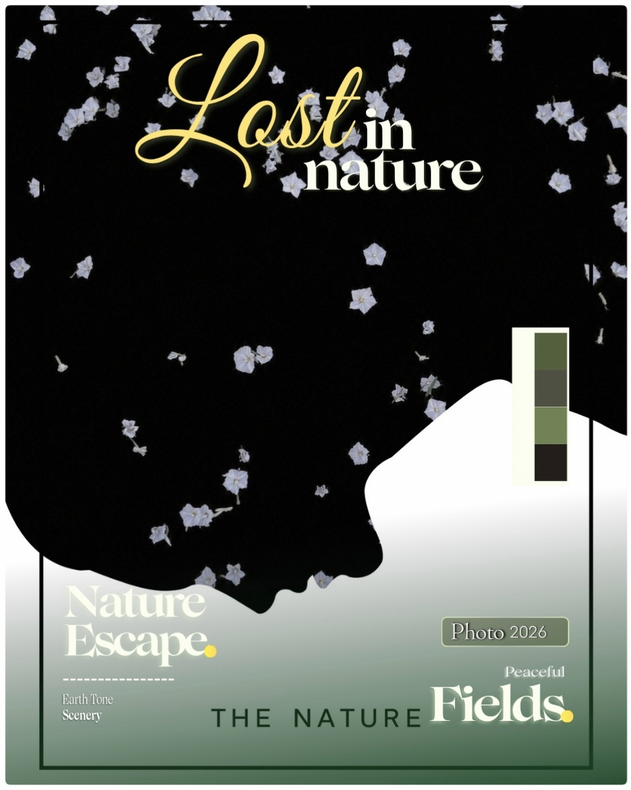
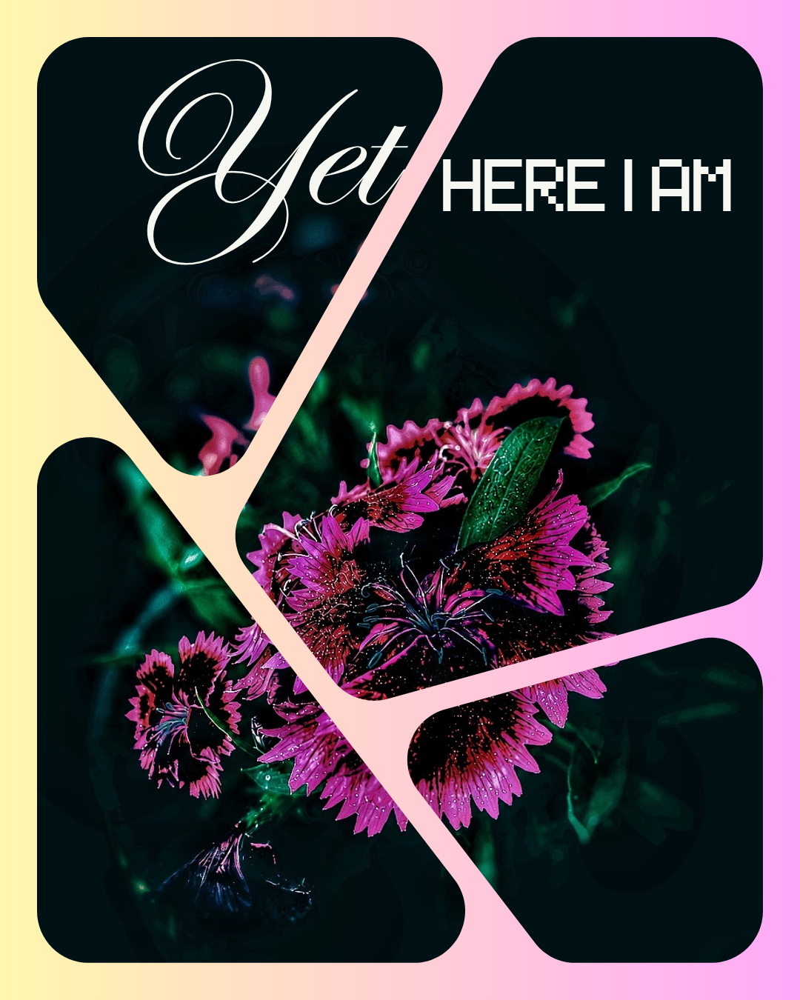
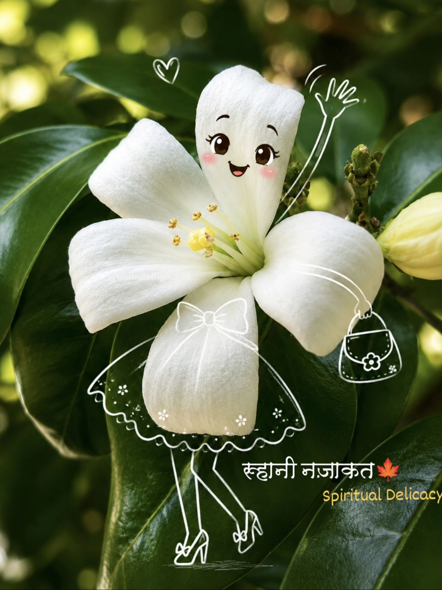
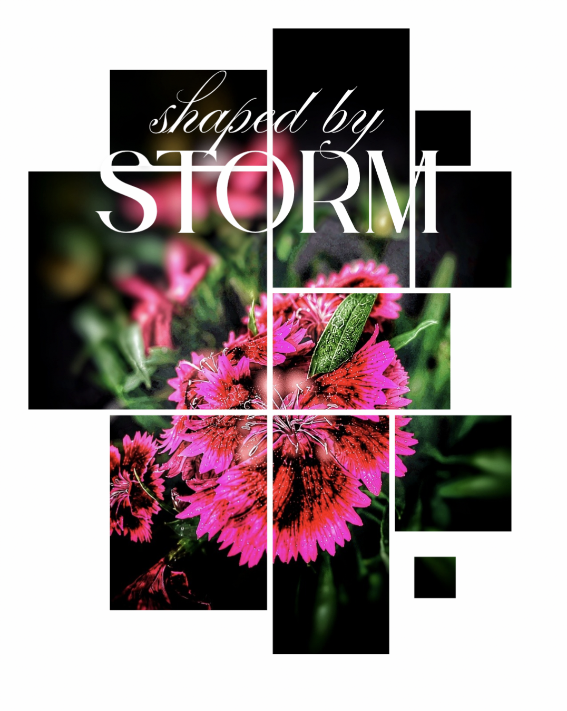
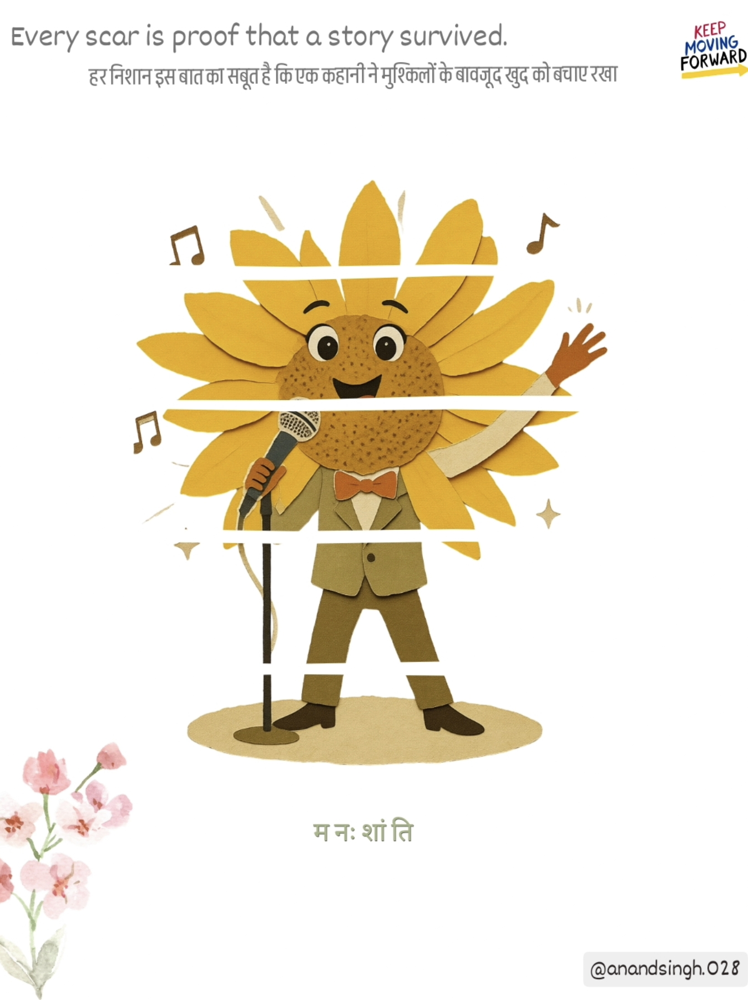
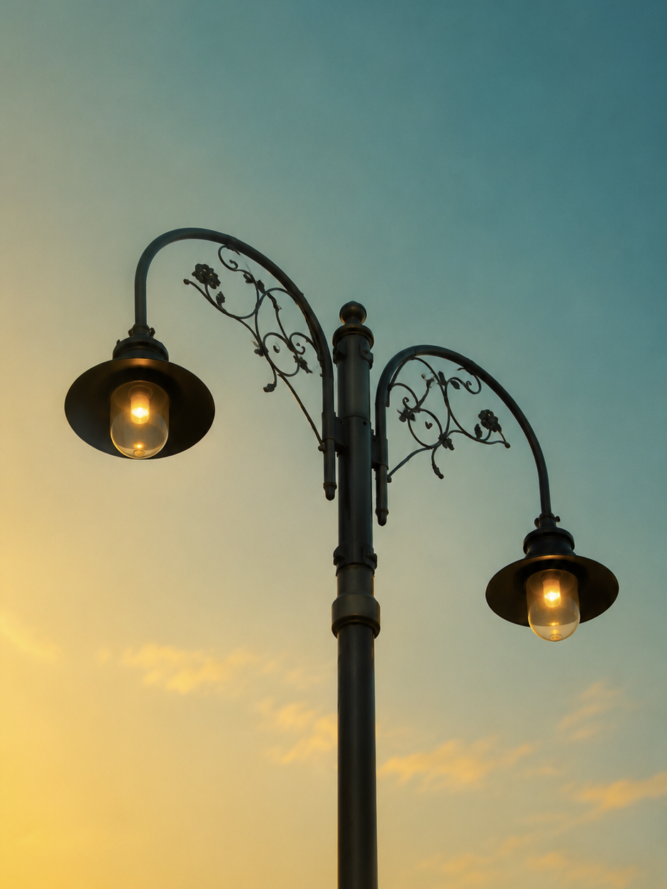
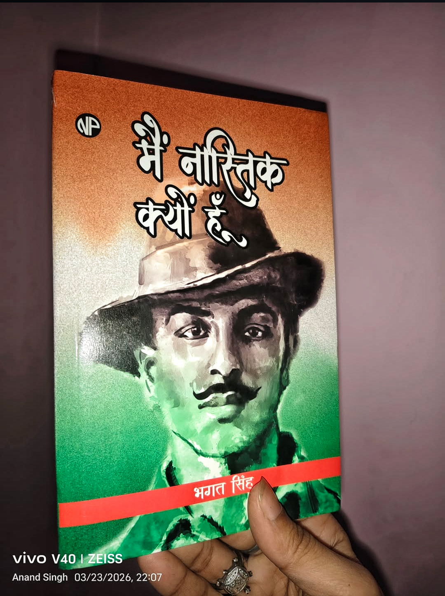
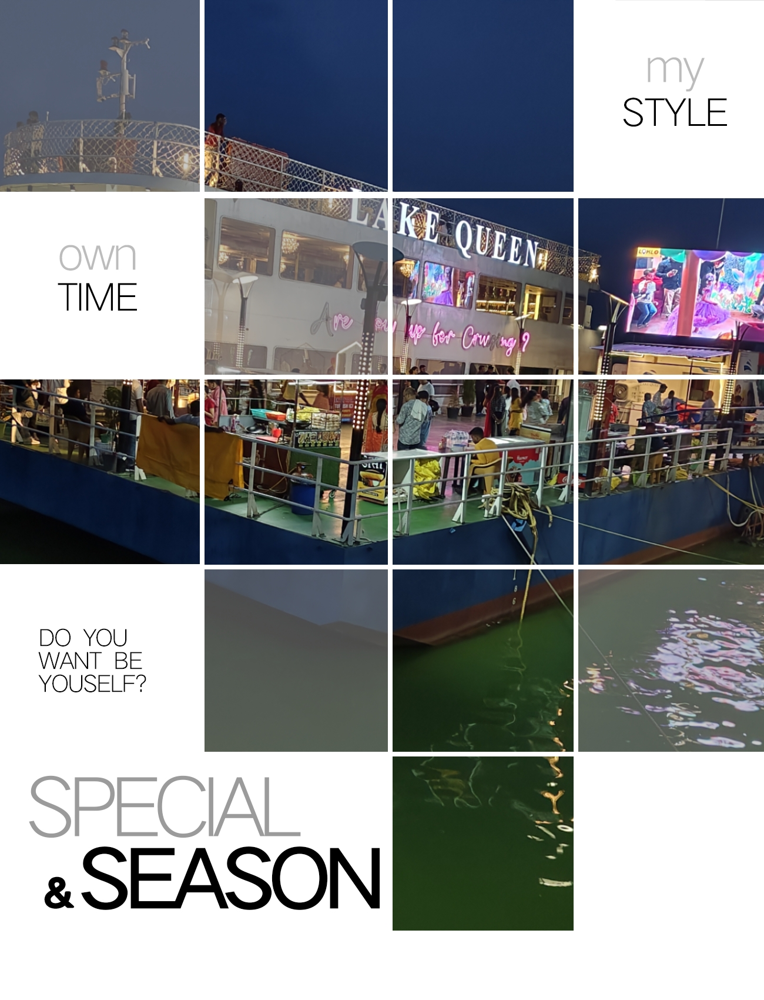
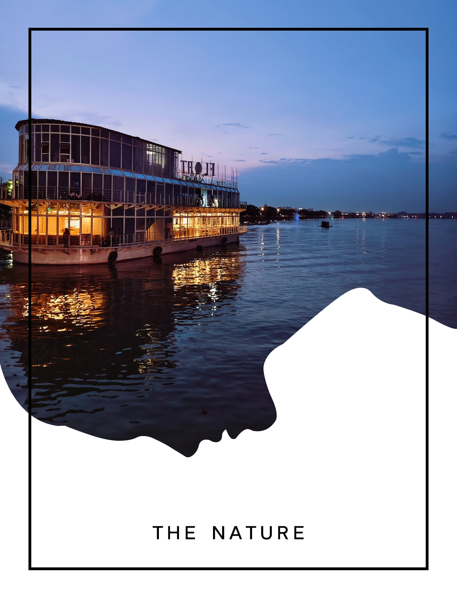
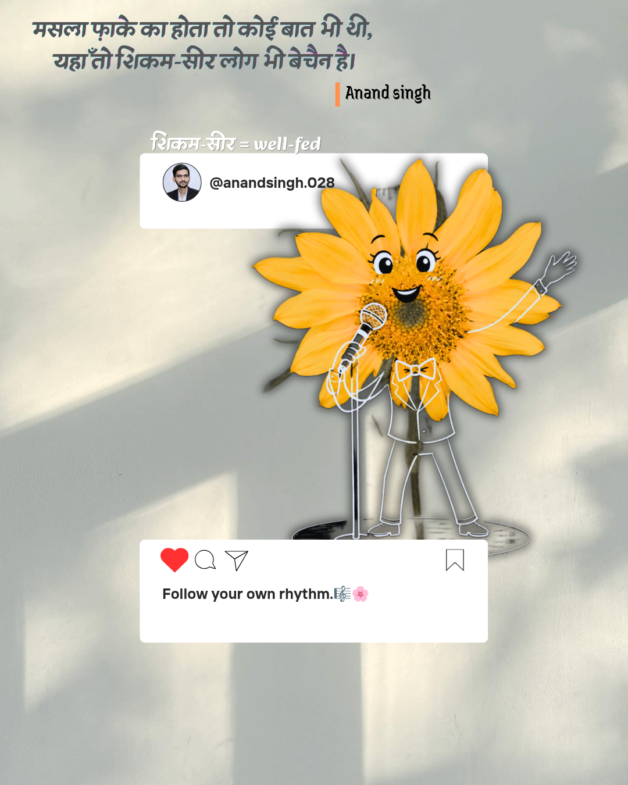

✨ Featured Posts ✨

🔹जंगल की गहरी ख़ामोशी में, जहाँ हवाएँ भी फुसफुसाकर गुजरती हैं और पत्तों की सरसराहट प्रकृति का मधुर संगीत बन जाती है, वहाँ सबसे छोटा-सा फूल भी अपनी सरल उपस्थिति से शांति का एक संपूर्ण ब्रह्मांड रच देता है। वह हमें याद दिलाता है कि सच्ची सुंदरता शोर में नहीं, बल्कि उस मौन में बसती है जहाँ आत्मा स्वयं से मिलती है। 🌼 🔸Amid the profound silence of the forest, where even the wind whispers softly and the rustling leaves compose nature’s gentle melody, the smallest flower creates an entire universe of peace through its quiet presence. It reminds us that true beauty is not found in noise, but in the stillness where the soul discovers itself.....✍🏻
View Post👆
🔸 वे कहानियाँ, अनुभव और भावनाएँ जो दिखाई नहीं देतीं, फिर भी कहीं न कहीं मौजूद रहती हैं।🌼 कुछ ऋतुएँ बिना आहट के चली जाती हैं, कुछ अपनी छाप पंखुड़ियों के नीचे छोड़ जाती हैं। रंग अपने स्रोत का परिचय नहीं देते, और जड़ें अपने संघर्षों का वर्णन नहीं करतीं। फिर भी हर फूल अपने भीतर एक अनकही दास्तान लिए होता है, जिसे बस हवाएँ पढ़ पाती हैं। 🌸 🔹Some seasons leave quietly. Some stay beneath the petals. The colors never explain where they came from, and the roots never tell their stories. Yet, every bloom carries a history that only the wind remembers.✍🏻
View Post👆
🔸Some lessons are not taught; they simply bloom. ✨🍁 Perhaps that is the lesson hidden within every bloom to grow gently, remain true to yourself, and let your presence speak louder than any display ever could.🌼
View Post👆
Some lessons are not taught; they simply bloom. ✨🍁 Perhaps that is the lesson hidden within every bloom to grow gently, remain true to yourself, and let your presence speak louder than any display ever could.
View Post👆
आँख के बदले आँख पूरी दुनिया को अंधा बना रही है .☣️⚠️ -Often attributed to Mahatma Gandhi.
View Post👆
नदियाँ कभी समुद्र तक पहुँचने की जल्दबाज़ी नहीं करतीं।✨ Rivers never rush to reach the sea. They bend, stumble over stones, and lose themselves around countless turns. Yet they keep moving. Perhaps the meaning was never in arriving, but in becoming something along the way. And maybe that's why every sunrise feels like a beginning, even when the sun is the same. ✨🌿
View Post👆
Just as travel reveals unseen paths of the world, life reveals unseen depths within ourselves. Gautama Buddha taught that every journey changes a person—not only through places explored, but through the wisdom gained along the way. The farther we travel through life, the more we realize that the true destination is self-understanding and inner peace. जिस प्रकार यात्रा दुनिया के अनदेखे रास्तों को उजागर करती है, उसी प्रकार जीवन हमारे भीतर की अनदेखी गहराइयों को प्रकट करता है। गौतम बुद्ध ने सिखाया कि प्रत्येक यात्रा व्यक्ति को बदल देती है - न केवल उन स्थानों के माध्यम से जिन्हें देखा जाता है, बल्कि रास्ते में प्राप्त ज्ञान के माध्यम से भी। जीवन में हम जितना आगे बढ़ते हैं, उतना ही हमें यह अहसास होता है कि सच्चा गंतव्य आत्म-समझ और आंतरिक शांति है।
View Post👆
सूनी शाखाओं और नीले आसमान के बीच यह रास्ता सिखाता है कि हर मौसम हमेशा नहीं रहता। कुछ पेड़ आज शांत हैं, पर हरियाली अब भी ज़िंदा है। ज़िंदगी भी ऐसी ही है| The deepest wisdom of life is simple— time changes, pain settles, and silence explains what words never could.
View Post👆
injustice is still alive today, then the revolution is still incomplete. ✊ अधूरा इंकलाब 🇮🇳 फाँसी के तख़्त से देखा था उसने, एक ऐसा भारत – जहाँ आज़ादी सिर्फ सत्ता परिवर्तन न हो, बल्कि चेतना का पुनर्जन्म हो। जहाँ किताबें तलवारों से शक्तिशाली हों, और प्रश्न पूछना देशद्रोह न कहलाए, जहाँ विचारों की आग में अंधविश्वास की जंजीरें पिघल जाएँ। उसने देखा था एक राष्ट्र, जहाँ भूख संविधान की पराजय न बने, जहाँ मेहनतकश के हाथ इतिहास के हाशिये पर न लिखे जाएँ। पर आज भी सड़कों पर न्याय कई बार प्रतीक्षा करता है, और भीड़ की आवाज़ सच की आवाज़ को ढँक देती है। वो चाहता था इंकलाब – सिर्फ राज बदलने का नहीं, बल्कि मनुष्य के भीतर छिपे भय को स्वतंत्र करने का।........✍🏻
View Post👆
कुछ यात्राएँ केवल एक स्थान से दूसरे स्थान तक नहीं ले जातीं, वे हमें अपने भीतर की ओर भी मोड़ देती हैं। शांत जल पर धीरे-धीरे आगे बढ़ती नाव सिखाती है कि जीवन की सबसे सुंदर मंज़िलें अक्सर धैर्य, संतुलन और निरंतर गति से ही मिलती हैं। लहरें आती हैं, बिखरती हैं और फिर शांत हो जाती हैं—ठीक वैसे ही जैसे समय हर कठिनाई को अपने साथ बहा ले जाता है। सफ़र का असली आनंद मंज़िल में नहीं, बल्कि उन पलों में छिपा होता है जब हवा चेहरे को छूती है, दूर क्षितिज पर रोशनियाँ टिमटिमाती हैं और मन बिना किसी शोर के मुस्कुरा उठता है। शायद इसी कारण हर यात्रा हमें थोड़ा बदल देती है—नए दृश्य दिखाकर नहीं, बल्कि पुरानी सोच को नया अर्थ देकर। Some journeys are not about reaching a destination; they are about discovering a quieter version of ourselves. Like a boat gliding gently across calm waters, life moves forward one wave at a time, reminding us that patience and persistence create the most meaningful paths. In the end, it is not the shore we remember most, but the peace we found while drifting toward it. 🌊✨
View Post👆
संसार की सबसे गहरी सच्चाइयाँ अक्सर शोर में नहीं, बल्कि सौंदर्य की शांत उपस्थिति में प्रकट होती हैं। जो मन किसी साधारण दृश्य में भी अर्थ खोज लेता है, वही जीवन की असाधारण गहराइयों को छू पाता है। शायद इसी कारण प्रकृति कभी बोलती नहीं, फिर भी बहुत कुछ सिखा जाती है। सुंदरता आवश्यक इसलिए नहीं कि वह दुनिया को आकर्षक बनाती है, बल्कि इसलिए कि वह मनुष्य को संवेदनशील बनाए रखती है। जब हम किसी शांत झील, एक अकेले फूल या सांझ की मद्धम रोशनी को निहारते हैं, तो अनजाने में अपने भीतर के शोर से भी दूर होने लगते हैं। उस क्षण हम केवल देख नहीं रहे होते, बल्कि स्वयं को फिर से खोज रहे होते हैं। हो सकता है जीवन का उद्देश्य केवल आगे बढ़ना न हो; कभी-कभी रुककर उस मौन को सुनना भी ज़रूरी होता है, जहाँ बिना शब्दों के ही सबसे गहरे उत्तर मिल जाते हैं। 🌿✨
View Post👆
कुछ प्रश्न आँकड़ों से बडे़ं होते हैं। वे न अर्थव्यवस्था से हल होते हैं, न तकनीक से, न उपलब्धियों से।वे चुपचाप मनुष्य के भीतर चलते रहते हैं और समय-समय पर अपना अस्तित्व याद दिलाते हैं। इतिहास ग़वाह है कि मनुष्य ने अभावों से लड़ना सीखा, प्रकृति को साधा, दूरियाँ मिटाई और असंख्य सुविधाएँ अर्जित कीं। लेकिन हर युग में एक ऐसा प्रश्न बचा रहा, जिसका उत्तर उपलब्धियों से नहीं मिला। शायद इसी प्रश्न की प्रतिध्वनि इन पंक्तियों में सुनाई देती है.....✍🏻💖
🎥 Watch on Instagram🌼🌿 About Nature's Canvas
Nature's Canvas is a space where nature, books, philosophy, literature, and original ideas come together. Every post is created to inspire thoughtful reading and meaningful reflection.